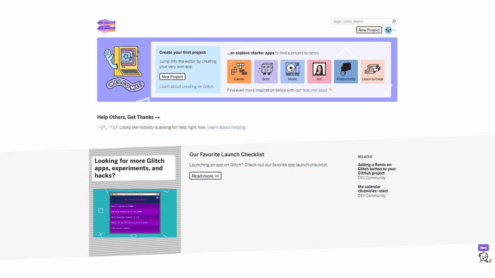

Welcome to the first tutorial of DECO3009 for 2020. In this tutorial, you will learn the basics of Glitch's interface and undertake a brief refresher of HTML, CSS, and JavaScript.
Glitch is an online coding tool which allows you to create and share web applications without the need for hosting them yourself, Glitch takes care of everything. Glitch comes with a powerful browser-based editor (or IDE) with automatic code completion and the ability to download tons of frameworks to integrate seamlessly in your project.
(1) Let's start by creating an account and signing in.

(2) After signing in, you will be presented with your Glitch homepage. Following the picture below, create a new webpage project (hello-webpage).
